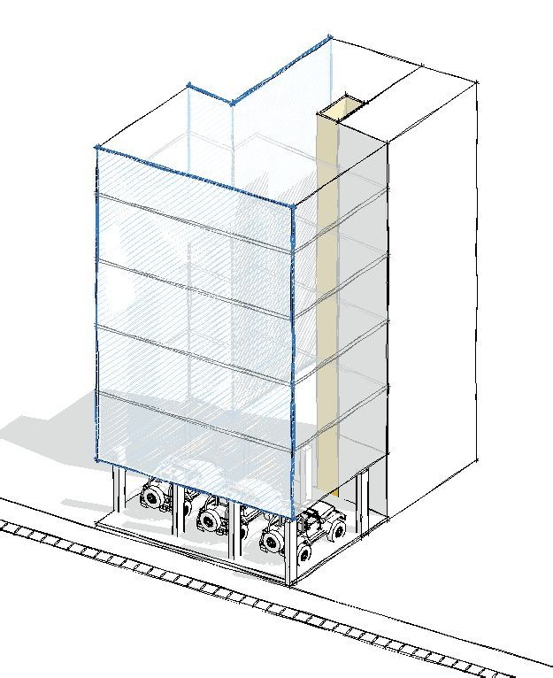
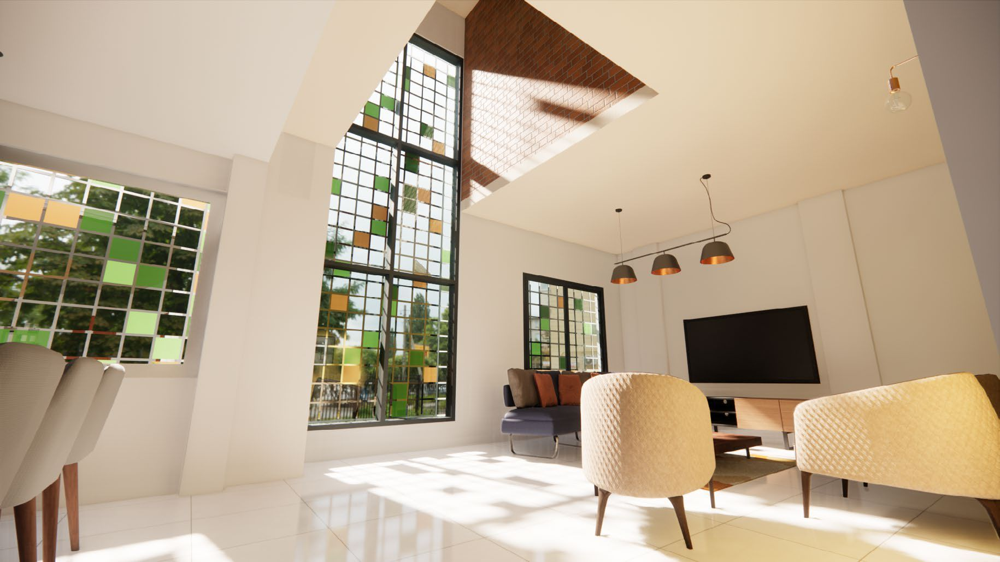
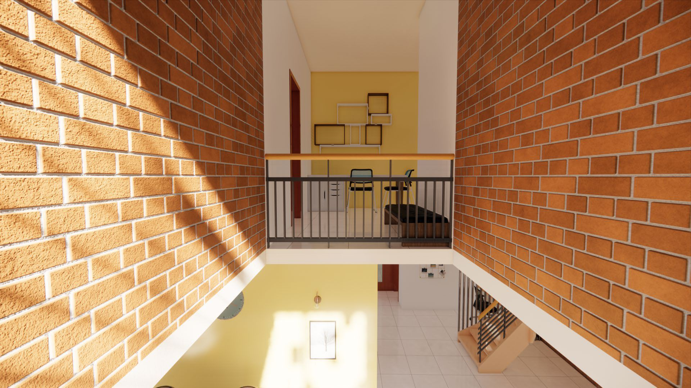
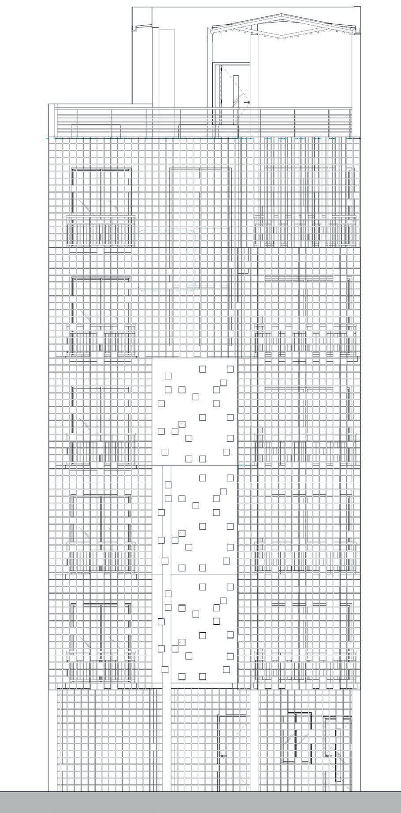
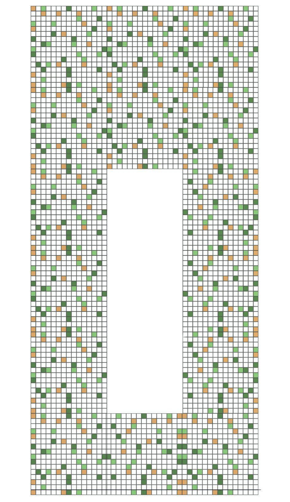
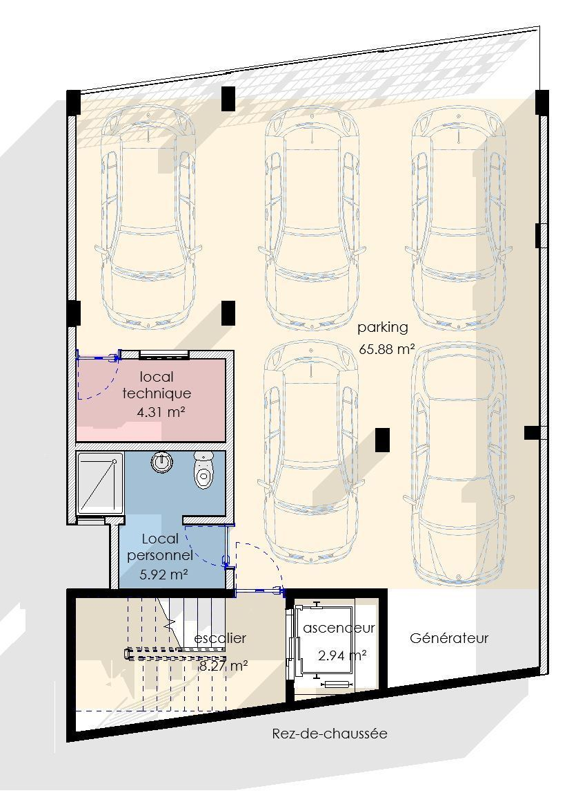
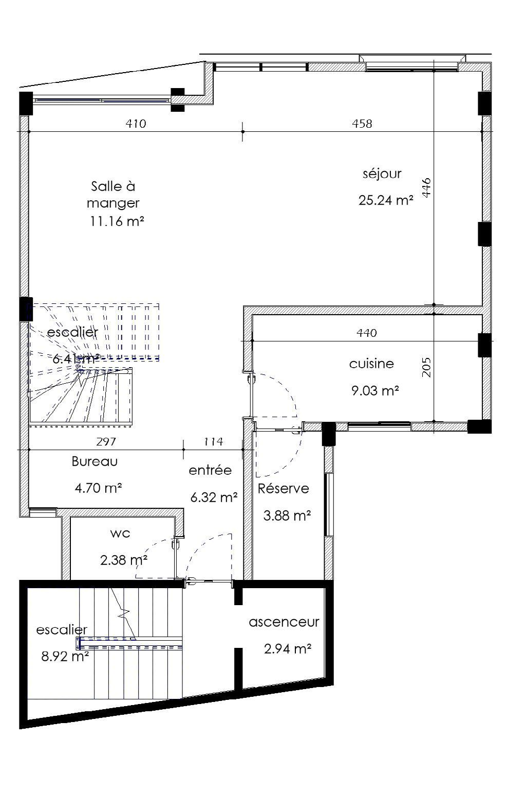

Totem Urbain & Résille Pixel
Situé dans le quartier dense de Bonapriso à Douala, ce projet est une réponse audacieuse à l’étroitesse parcellaire. Sur une emprise au sol de seulement 108 m², le bâtiment s’élance en R+5 tel un totem urbain.
L’identité du projet réside dans sa façade « double peau ». Conçue sur une trame de 20x20 cm, cette résille métallique alterne pleins et vides de manière aléatoire (randomisation). Ce filtre architectural assure l’intimité des loggias, brise le soleil direct et unifie le volume vertical.
Pour compenser la densité, le plan s’articule autour d’un puits de lumière central généreux. Ce dispositif agit comme une cheminée thermique naturelle, évacuant l’air chaud et inondant les circulations de lumière naturelle.







